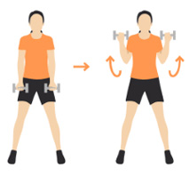

푸시업 (Push-Up)
방법: 손을 어깨너비로 벌리고 바닥에 손을 짚은 후, 팔꿈치를 구부려 가슴을 바닥에 가깝게 내리고 다시 밀어 올립니다.
횟수: 10~15회
효과: 가슴, 삼두근, 어깨 강화.
플랭크 (Plank)
방법: 팔꿈치와 발끝을 바닥에 대고 몸을 곧게 편 상태로 30초~1분 간 버팁니다.
효과: 코어와 어깨 근육 강화.
턱걸이 (Pull-Up)
방법: 철봉을 잡고 팔을 당겨서 턱이 철봉 위로 오도록 올려줍니다.
횟수: 3~8회
효과: 등, 팔 근육 발달.
덤벨 (Dumbbell)
1) 덤벨 체스트 프레스 (Dumbbell Chest Press)
방법: 벤치에 눕고 양손에 덤벨을 들고 팔꿈치를 90도 각도로 구부린 후, 덤벨을 위로 밀어 올립니다.
횟수: 10~12회
효과: 가슴, 어깨, 삼두근 발달.
2) 덤벨 숄더 프레스 (Dumbbell Shoulder Press)
방법: 양손에 덤벨을 들고 어깨 높이에서 덤벨을 위로 밀어 올립니다.
횟수: 10~12회
효과: 어깨 근육 강화.
3) 덤벨 로우 (Dumbbell Row)
방법: 한쪽 무릎과 손을 벤치에 대고 다른 손에 덤벨을 든 후, 허리를 곧게 편 상태에서 덤벨을 허리 쪽으로 당겨줍니다.
횟수: 10~12회
효과: 등, 팔, 코어 근육 강화.
4) 덤벨 바이셉 컬 (Dumbbell Bicep Curl)
방법: 양손에 덤벨을 들고 팔꿈치를 구부려 덤벨을 어깨 쪽으로 들어올립니다.
횟수: 10~15회
효과: 이두근 강화.
5) 트라이셉스 킥백 (Triceps Kickback)

방법: 허리를 약간 숙인 상태에서 덤벨을 든 팔을 뒤로 폅니다.
횟수: 10~12회
효과: 삼두근 강화.